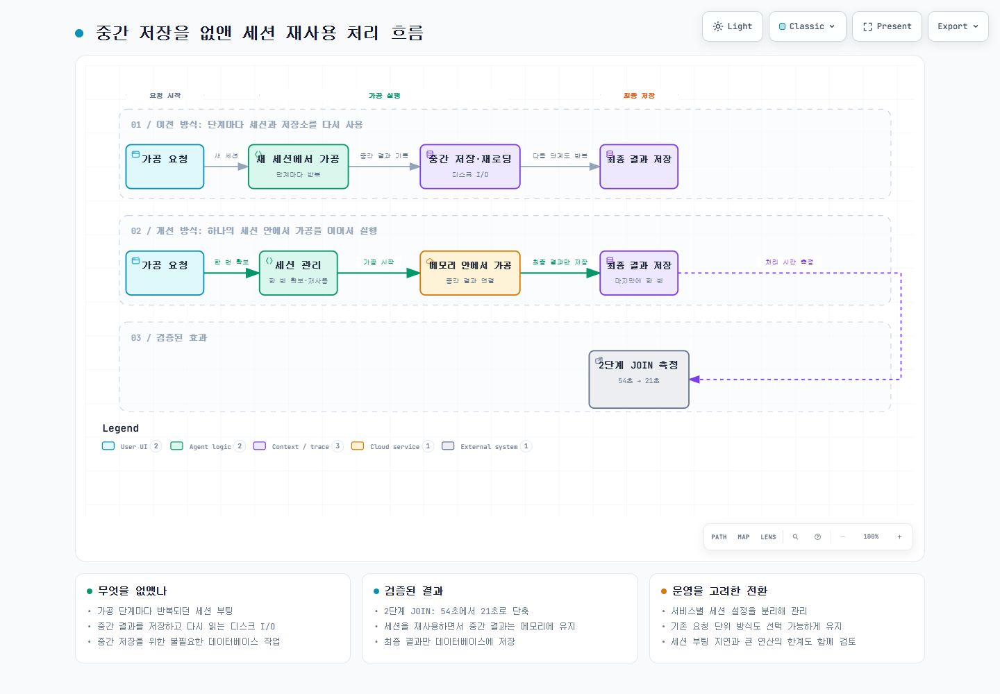

PROJECT 04 / 성능·정확성
데이터 조회·가공 성능과 정확성 개선
대규모 데이터 조회·가공에서 시간이 오래 걸리는 지점과 결과가 달라지는 지점을 나눠 확인했습니다. SQL, 데이터 로딩, 실행 방식을 각각 바꾸고 결과를 검증했습니다.
- 기간
- 운영 개선 사례
- 담당 역할
- 병목 분석 · 개선안 설계·구현 · 실행 결과 검증
- Java
- Spring Boot
- PostgreSQL / Citus
- Spark
- Livy
- PySpark
중복 데이터가 늘어나던 조회 구조
여러 테이블을 연결한 뒤 마지막에 중복을 제거하던 대상자 수 조회는, 같은 대상의 데이터가 연결 단계마다 늘어났습니다. 조건이 복잡해질수록 처리 시간도 길어졌습니다.
각 조회 대상에서 중복 식별자를 먼저 제거한 뒤 연결하도록 SQL 구조를 수정했습니다. 대표 조건은 약 18초에서 0.633초로 단축됐고, 약 27분 후 실패하던 조건도 약 10초에 결과를 반환했습니다.
수백 개 조건을 가진 조회
진단 코드와 순번처럼 조건 수백 개를 OR로 나열한 조회는 실제 서비스에서 시간 초과가 발생했습니다. 인덱스 결과를 합치고 다시 확인하는 비용이 커졌습니다.
조건 목록을 가상의 테이블로 만들고 원본 데이터와 연결하는 JOIN VALUES 구조로 변경했습니다. 조건 349개 기준 6.7초에서 0.4초로 단축됐습니다.
SQL 구조를 바꿔도 조회 범위가 무제한이면 다시 병목이 생기므로 조회 기간을 반드시 받도록 제안했습니다.
분산 로딩 성능을 높이되 결과 일관성을 지킨 과정
사용자 생성 테이블에는 Spark가 병렬로 읽을 때 사용할 안정적인 분할 기준이 없어 처음에는 임시 행 번호를 붙여 작업을 나눴습니다. 각 작업이 조회를 독립적으로 실행하면서 같은 행에도 다른 번호가 매겨질 수 있었고, 데이터가 중복되거나 빠지는 문제가 생겼습니다.
- 임시 행 번호 기반 분할은 결과가 달라질 수 있어 폐기했습니다.
- PostgreSQL의 내부 행 위치 값인 ctid를 포함한 Materialized View(조회 결과를 임시로 저장한 객체)를 만든 뒤 이를 기준으로 데이터를 나눠 읽었습니다.
- 이후 JDBC predicates로 각 작업이 서로 다른 조건의 데이터를 직접 읽도록 바꿔 임시 View 생성에 드는 디스크 쓰기를 없앴습니다.
| 개발 환경의 로드 + 건수 확인 | 기존 Materialized View | 조건 분할 직접 로딩 |
|---|---|---|
| 32개 파티션 | 7분 11초 | 5분 11초 |
| 4개 파티션 | 3분 40초 | 56초 |
약 4,482만 행의 개발 환경 테스트입니다. 파티션 수별 비교 조건을 유지한 측정이며, 운영 전반의 응답 시간으로 일반화하지 않습니다.
세션과 중간 저장을 줄인 가공 흐름
기존에는 가공 단계마다 Spark 세션을 새로 만들고 중간 결과를 데이터베이스에 저장했습니다. 세션 부팅과 저장·재로딩이 반복돼 짧은 가공도 오래 걸렸습니다.
세션 관리 서비스와 연동해 하나의 세션에서 여러 가공 단계를 이어서 실행하고, 중간 결과는 메모리에 유지한 뒤 최종 결과만 저장했습니다. 두 단계 JOIN 가공을 54초에서 21초로 단축했습니다.
서비스별 세션 설정을 분리하고 기존 요청 단위 방식도 선택할 수 있게 유지했습니다. 초기 세션 부팅 지연과 연산 자체가 매우 큰 경우의 한계도 확인했습니다.
판단 기준
- 처리 시간이 줄어도 결과 데이터가 달라지면 적용하지 않았습니다.
- SQL 구조를 바꾼 뒤 조회 기간 정책도 함께 제안했습니다.
- 쓰기 성능을 위해 검토한 테이블 저장 방식 변경은 장애 복구 위험이 커 적용하지 않았습니다.
세션 재사용을 통한 가공 흐름 개선
하나의 Spark 세션에서 여러 가공 단계를 실행하고, 중간 결과는 메모리에 유지한 뒤 최종 결과를 저장합니다.
